대기환경산업기사 (2008-05-11 기출문제)
1과목: 대기오염개론
1. 실내공기 오염물질에 관한 다음 설명으로 옳은 것은?
- 라돈: 우라늄 - 238 계열의 붕괴과정에서 만들어진 라듐 - 226의 괴변성 생성물질로서 인체에는 폐암을 유발시키는 오염물질이다.
- 포름알데히드: 자극취가 있는 연녹색의 기체이며, 보통 10ppm에서 냄새를 느끼기 시작한다.
- VOC: VOC 중 가장 독성이 강한 것은 사염화탄소이며, 다음은 에틸벤젠, 크실렌, 톨루엔 순서로 약하다.
- 석면: 석면이나 광물섬유들은 장력장도와 열 및 전기적 절연성이 작고, 화학적으로는 잘 분해되지 않으며, 침착속도는 섬유길이에 가장 큰 영향을 받는다.
(정답률: 알수없음)

2. 다음은 오존층 파괴물질에 관한 설명이다. 가장 적합한 것은?
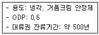
- CFC - 115
- Halon - 1301
- Halon - 1211
- CCl4
(정답률: 알수없음)
3. 실제 굴뚝높이가 100m이고, 안지름이 1.2m인 굴뚝에서 아황산가스를 포함하는 연기가 12m/s의 속도로 배출되고 있다. 배출가스 중 아황산가스의 농도가 3000ppm일 때, 유효굴뚝높이는? (단, 풍속은 2m/s, 수직 및 수평 확산계수는 모두 0.1, ΔH =
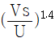
를 이용하며, 연기와 대기의 온도차는 무시한다.)- 약 15m
- 약 55m
- 약 115m
- 약 155m
(정답률: 알수없음)
4. 다이옥신에 관한 설명으로 가장 거리가 먼 것은?
- PCB의 불완전연소에 의해서 발생한다.
- 저온에서 촉매와 반응에 의해 먼지와 결합하여 생성된다.
- 수용성이 커서 토양오염 및 하천오염의 주원인으로 작용한다.
- 다이옥신의 주요 구성요소는 두 개의 산소, 두 개의 벤젠, 두 개 이상의 염소이다.
(정답률: 알수없음)
5. 다음 그림은 탄화수소가 존재하지 않는 경우 NO2 의 광화학싸이클(Photo Cycle)이다. 그림의 A 및 B에 해당되는 물질은?
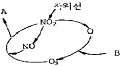
- A = NO2, B = NO
- A = O2, B = O2
- A = NO, B = NO2
- A = O2, B = CO2
(정답률: 알수없음)
6. 다음 중 지표부근의 건조대기의 조성이 부피 농도로 0.06 - 0.2ppm이고, 그 체류시간이 약 0.5년인 물질로 가장 적합한 것은?
- Ar
- Ne
- N2O
- CO
(정답률: 알수없음)
7. 대기오염물질이 인체에 미치는 영향에 관한 설명 중 옳지 않은 것은?
- 광화학 반응으로 생성된 옥시던트(Oxidant)는 눈을 자극한다.
- 3, 4 - 벤조피렌 같은 탄화수소 화합물은 발암성 물질로 알려져 있다.
- 황산화물은 부유먼지와 더불어 상승작용을 일으켜 인체에 미치는 영향이 크다.
- 일산화질소의 유독성은 이산화질소의 독성보다 약 5 - 7배 강하다.
(정답률: 알수없음)
8. 다음은 대기의 동적 안정도를 나타내는 '리차드슨 수'에 관한 설명이다. ( )안에 가장 적합한 것은?
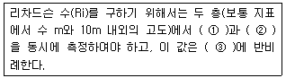
- ① 기압, ② 기온, ③ 기온차의 제곱
- ① 기온, ② 풍속, ③ 풍속차의 제곱
- ① 기압, ② 기온, ③ 풍속차의 제곱
- ① 기온, ② 풍속, ③ 기온차의 제곱
(정답률: 알수없음)
9. 연소과정 중 고온에서 발생하는 주도니 질소화합물의 형태로 가장 적합한 것은?
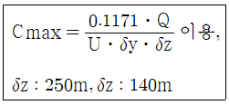
- N2
- NO
- NO2
- NO3
(정답률: 알수없음)
10. 휘발유를 사용하는 가솔린 기관에서 배출되는 오염물질에 관한 설명 중 가장 거리가 먼 것은? (단, 휘발유의 대표적인 화학식은 octene으로 가정하고, AFR은 중량비 기준)
- AFR을 10에서 14로 증가시키면 CO 농도는 감소한다.
- AFR이 16 까지는 HC 농도가 증가하나, 16이 지나면 HC농도는 감소한다.
- CO와 HC는 불완전연소시에 배출율이 높고, NOx는 이론 AFR 부근에서 농도가 높다.
- AFR이 18 이상 정도의 높은 영역은 일반 연소기관에 적용하기는 곤란하다.
(정답률: 알수없음)
11. 교통밀도가 6000대/h, 차량평균속도가 95km/h인 고속도로상에서 차량 1대의 탄화수소 방출량이 2×10-2g/sㆍ대 일 때, 고속도로에서 방출되는 탄화수소의 총량(g/sㆍm)은?
- 1.26
- 1.26×10-1
- 1.26×10-2
- 1.26×10-3
(정답률: 알수없음)
12. 광화학 반응에 관한 설명으로 가장 거리가 먼 것은?
- 광화학 반응에 의한 생성물로는 PAN, 케톤, 아크롤레인, 질산 등이 있다.
- 대기중에서의 오존 농도는 보통 NO2로 산화되는 NO의 양에 비례하여 증가한다.
- 알데히드는 NO2 생성에 앞서 반응 초기부터 생성되며 탄화수소의 감소에 대응한다.
- NO에서 NO2로의 산화가 거의 완료되고, NO2가 최고농도에 달하면서 O3가 증가되기 시작한다.
(정답률: 알수없음)
13. 다음 대기오염물질 중 비중이 가장 큰 것은?
- CO
- SO2
- CS2
- NO2
(정답률: 알수없음)
14. 연돌내의 배기가스 평균 온도가 325℃, 대기의 온도는 25℃이다. 이때 통풍력을 40mmH2O로 하기 위한 연돌의 높이는? (단, 연소가스와 공기의 표준상태에서의 밀도는 1.3kg/Nm3이고, 연돌내의 압력손실은 무시한다. )
- 약 79m
- 약 72m
- 약 70m
- 약 67m
(정답률: 알수없음)
15. 가솔린기관과 디젤기관을 상대 비교할 때, 디젤기관의 특성으로 옳은 것은?
- 압축비가 8 - 9 정도로 낮다.
- 연료를 공기와 혼합시켜 실린더에 흡입, 압축시킨 후 점화플러그에 의해 강제연소 시킨다.
- 소음진동이 적다.
- 정체가 심한 도심 주행에 있어서는 연료 소비가 적은 편이다.
(정답률: 알수없음)
16. 대기의 구조에 관한 다음 설명 중 틀린 것은?
- 대류권에서는 고도가 높아짐에 따라 단열팽창에 의해 약 6.5℃/km씩 낮아지는 기온감률 때문에 공기의 수직 혼합이 일어난다.
- 대류권은 평균 12km(위도 45도의 경우) 정도이며, 극지방으로 갈수록 낮아진다.
- 오존층에서는 오존의 생성과 소멸이 계속적으로 일어나면서 오존의 농도를 유지한다.
- 자외선 복사에너지는 성층권을 통과할수록 서서히 증가하고, 가장 낮은 온도는 성층권 상부에서 나타난다.
(정답률: 알수없음)
17. 120m3인 복사실에서 오존 배출량이 분당 240㎍인 복사기를 연속 사용하고 있다. 이 복사기를 사용하기 전의 실내 오존의 농도가 196㎍/Nm3라고 할 때, 6시간 사용 후 복사실의 오존농도는 몇 ppb인가? (단, 0℃, 1기압 기준, 환기 없음)
- 약 333 ppb
- 약 427 ppb
- 약 648 ppb
- 약 916 ppb
(정답률: 알수없음)
18. 염화수소의 주요 배출관련 업종과 가장 거리가 먼 것은?
- 금속제련
- 플라스틱 공장
- 유리공업
- 소오다 공업
(정답률: 알수없음)
19. 다음 중 온실효과를 유발하는 원인물질과 가장 거리가 먼 것은?
- CH4
- CO
- CO2
- H2O
(정답률: 알수없음)
20. 어떤 공장의 현재 유효연돌고가 44m이다. 이 때의 농도에 비해 유효연돌고를 높여 최대지표농도를 1/2 로 감소시키고자 한다. 다른 조건이 모두 같다고 가정할 때 유효연돌고는?
- 약 62m
- 약 66m
- 약 71m
- 약 75m
(정답률: 알수없음)
2과목: 대기오염 공정시험 기준(방법)
21. 굴뚝 배출가스 중 휘발성유기화합물질을 흡착관을 사용하여 시료 채취할 때의 설명으로 틀린 것은?
- 채취관 재질은 유리, 석영, 불소수지 등으로 120℃이상까지 가열이 가능한 것이어야 한다.
- 시료 채취관에서 응축기 등의 연결관은 가능한 짧게 하고 밀봉그리스를 사용하여 가스의 누출이 없도록 한다.
- 응축기는 가스가 앞쪽 흡착관을 통과하기 전 가스를 20℃이하로 낮출 수 있는 용량이어야 한다.
- 유량측정부는 기기의 온도 및 압력이 측정되고, 최소 100mL/min의 유량으로 시료채취가 가능해야 한다.
(정답률: 알수없음)
22. 원자흡광분석에 사용되는 불꽃을 만들기 위한 조연성 가스와 가연성가스의 조합으로 가장 거리가 먼 것은?
- 아세틸렌 - 일산화질소
- 수소 - 공기 - 알곤
- 아세틸렌 - 공기
- 프로판 - 공기
(정답률: 알수없음)
23. 분석대상가스가 불소화합물인 경우, 시료채취를 위한 채취관 및 도관의 재질( ① )과 여과재의 재질( ② )로 가장 알맞은 것은?
- ① 경질유리, ② 소결유리
- ① 석영, ② 실리카솜
- ① 스테인레스강, ② 카아보란덤
- ① 불소수지, ② 알카리 성분이 없는 유리솜
(정답률: 알수없음)
24. 굴뚝 배출가스 중의 암모니아 분석방법에 관한 설명으로 틀린 것은?
- 인도페놀법으로 측정할 때 시료채취량이 20L인 경우 시료 중의 암모니아 농도가 약 0.01 - 0.5ppm의 분석에 적합하다.
- 인도페놀법으로 측정할 때 암모니아 농도에 대하여 이산화질소는 100배이상 공존하지 않는 경우에 적합하다.
- 중화적정법으로 측정할 때 황산으로 적정한다.
- 중화적정법으로 측정할 때 시료채취량이 40L인 경우 시료 중의 암모니아 농도가 약 100ppm 이상인 것의 분석에 적합하다.
(정답률: 알수없음)
25. 기체-액체 크로마토그래프법에서 분배형 충전물질로 사용되는 내화벽돌에 관한 설명으로 가장 적합한 것은?
- 일반적인 내화점토를 사용한 것이 아니고, 흑토를 주성분으로 한 내화온도 1100℃ 정도의 단열벽돌을 뜻한다.
- 일반적인 내화점토를 사용한 것이 아니고, 규조토를 주성분으로 한 내화온도 1100℃ 정도의 단열벽돌을 뜻한다.
- 일반적인 내화점토를 사용한 내화온도 1100℃ 정도의 단열벽돌을 뜻한다.
- 일반적인 내화점토를 사용한 내화온도 1800℃ 정도의 단열벽돌을 뜻한다.
(정답률: 알수없음)
26. 분석대상가스가 페놀인 경우 채취관 및 도관의 재질로 가장 거리가 먼 것은?
- 석영
- 스테인레스강
- 실리콘수지
- 불소수지
(정답률: 알수없음)
27. 다음은 굴뚝 배출가스 중의 황화수소 분석방법에 관한 설명이다. ( )안에 알맞은 것은?
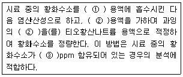
- ① 메틸렌블루우, ② 요오드, ③ 5 - 1000
- ① 아연아민착염, ② 요오드, ③ 100 - 2000
- ① 메틸렌블루우, ② 디에틸아민동, ③ 100 - 2000
- ① 아연아민착염, ② 디에틸아민동, ③ 5 - 1000
(정답률: 알수없음)
28. 굴뚝 배출가스 내의 포름알데히드 분석방법 중 아세틸아세톤법으로 측정할 때 아황산가스 공존에 의한 방해제거를 위해 흡수발색액에 넣어주는 것은?
- 질산암모늄과 아세톤
- 염화제이수은과 염화나트륨
- 암모니아수와 수산화나트륨
- 피리딘 - 피라졸론 용액과 시안화칼륨
(정답률: 알수없음)
29. 대기오염공정시험방법에서 정의하는 기밀용기에 관한 설명으로 옳은 것은?
- 물질을 취급 또는 보관하는 동안에 이물이 들어가거나 내용물질이 손실되지 않도록 보호하는 용기
- 물질을 취급 또는 보관하는 동안에 외부로부터의 공기 또는 다른 가스가 침입하지 않도록 내용물을 보호하는 용기
- 물질을 취급 또는 보관하는 동안에 내용물이 광화학적변화를 일으키지 않도록 보호하는 용기
- 물질을 취급 또는 보관하는 동안에 기체 또는 미생물이 침입하지 않도록 내용물을 보호하는 용기
(정답률: 알수없음)
30. 비중 1.4인 황산이 50%의 순황산을 포함하고 있다면 규정농도는?
- 7.1N
- 10.6N
- 14.3N
- 16.2N
(정답률: 알수없음)
31. 농도 0.02mol/L의 H2SO4 25mL를 중화하는데 필요한 N/10 NaOH의 용량은?
- 1mL
- 5mL
- 10mL
- 25mL
(정답률: 알수없음)
32. 배출가스 중의 비소화합물을 자외선 가시선 분광법(흡광광도법)으로 분석할 때 간섭물질에 관한 설명으로 옳지 않은 것은?
- 비소화합물 중 일부 화합물은 휘발성이 있으므로 채취시료를 전처리 하는 동안에 비소의 손실 가능성이 있어 마이크로파산분해법으로 전처리 하는 것이 좋다.
- 황화수소에 대한 영향은 아세트산납으로 제거할 수 있다.
- 안티몬은 스티빈(Stibine)으로 산화되어 610nm에서 최대 흡수를 나타내는 착물을 형성케 함으로써 비소 측정에 간섭을 줄 수 있다.
- 메틸비소화합물은 pH1에서 메틸수소화비소를 생성하여 흡수용액과 착물을 형성하고 총 비소 측정에 영향을 줄 수 있다.
(정답률: 알수없음)
33. 연료용 유류 중 황함유량 측정을 위한 분석방법에 대한 설명으로 옳지 않은 것은?
- 분석방법의 종류는 연소관식 공기법과 방사선식 여기법이 있으며, 원유ㆍ경유ㆍ중유에 적용된다.
- 방사선식 여기법은 950 - 1100℃로 가열한 탄소재질 방사관에 황을 포함한 유류에 γ선을 조사하여 얻어진 형광 γ선의 광도를 측정한다.
- 연소관식 공기법은 불용성 황산염을 만드는 금속(Ba, Ca 등)이 들어있는 시료에는 적용할 수 없다.
- 연소관식 공기법은 생성된 황산화물을 과산화수소(3%)에 흡수시켜 황산으로 만든 다음, 수산화나트륨표준액으로 중화적정하여 황함유량을 구한다.
(정답률: 알수없음)
34. 환경대기 시료채취 중 공기주머니(air bag)를 사용한 용기 포집법에 관한 설명으로 가장 거리가 먼 것은?
- 측정기기를 측정장소까지 갖고 갈 수 없거나 소수의 측정기로서 다수의 지점에서 동시에 시료를 측정할 경우에 이용한다.
- 일반적으로 사용되는 주머니 재질은 연질 염화비닐, 4불화비닐, 4불화 에틸렌(Teflon)폴리에틸렌텔레프탈레이트 등을 사용한다.
- 비닐주머니는 입자상물질 채취이외는 사용해선 안된다.
- 한번 사용한 주머니 내부가 다른 가스로 오염되어 있는 경우에는 주머니 외부를 적외선 램프로 가열하면서 건조하고 깨끗한 공기를 통과시켜 세척한다.
(정답률: 알수없음)
35. 특정 발생원에서 일정한 굴뚝을 거치지 않고 외부로 비산 배출되는 먼지의 측정방법에 관한 설명으로 가장 거리가 먼 것은?
- 시료채취장소는 원칙적으로 측정하려고 하는 발생원의 부지경계선상에 선정하며 풍향을 고려하여 그 발생원의 비산먼지 농도가 가장 높을 것으로 예상되는 지점 3개소 이상을 선정한다.
- 풍속이 0.5m/초 미만 또는 10m/초 이상 되는 시간이 전채취시간의 50% 이상일 때는 풍속보정계수는 1.2로 한다.
- 전 시료채취 기간 중 주풍향이 변동 없을 때(45°미만)는 풍향보정계수는 1.5로 한다.
- 각 측정지점의 포집먼지량과 풍향풍속의 측정결과로부터 비산먼지농도를 구할 때 대조위치를 선정할 수 없는 경우에는 0.15mg/m3를 대조위치의 먼지농도로 한다.
(정답률: 알수없음)
36. 환경대기 중의 질소산화물 농도를 측정하기 위한 야콥스호흐하이저법에 관한 설명으로 가장 거리가 먼 것은?
- 포집시료는 적어도 6주간은 안전하다.
- 방해물질인 아황산가스는 분석전에 과산화수소를 첨가하여 황산으로 변화시키는데 따라 제거된다.
- 수산화칼륨용액에 시료대기를 흡수시키면 대기중의 이산화질소가 아질산칼륨용액으로 변화될 때 생성된 아질산이온을 발색시켜 740nm에서 측정된다.
- 0.04㎍NO2-/mL의 농도는 1cm셀을 사용했을 때 0.02의 흡광도에 해당된다.
(정답률: 알수없음)
37. 굴뚝 배출가스 내의 산소측정방법 중 담벨형(Dumb-bell)자기력 분석계의 구성장치에 관한 설명으로 옳지 않은 것은?
- 측정셀은 시료 유통실로서 자극사이에 배치하여 담벨 및 불균형 자계발생 자극편을 내장한 것이다.
- 담벨은 자기화율이 큰 석영 등으로 만들어진 중공의 구체를 막대 양 끝에 부착한 것으로 알곤을 봉입한 것이다.
- 자극편은 외부로부터 영구자석에 의하여 자기화되어 불균등 자장을 발생하는 것이다.
- 피드백코일은 편위량을 없애기 위하여 전류에 의하여 자기를 발생시키는 것으로 일반적으로 백금선이 이용된다.
(정답률: 알수없음)
38. 대기오염공정시험방법상 시약, 시액, 표준물질에 관한 규정으로 거리가 먼 것은?
- 시험시약 중 따로 규정이 없고, 단순히 질산으로 표시했을 때는, 그 비중은 약 1.38, 농도는 60.0 - 62.0% 이상의 것을 뜻한다.
- 시험에 사용하는 표준품은 원칙적으로 특급시약을 사용한다.
- 표준액을 조제하기 위한 표준용 시약은 따로 규정이 없는 한 데시케이터에 보존된 것을 사용한다.
- 표준품을 채취할 때 표준액이 정수로 기재되어 있는 경우에는 기재수치에 '약'자를 붙여 사용할 수 없다.
(정답률: 알수없음)
39. 굴뚝배출가스 내의 일산화탄소 분석방법 중 정전위 전해법장치 성능에 관한 설명으로 옳지 않은 것은?
- 측정범위는 최고 3%로 한다.
- 재현성은 측정범위 최대 눈금값의 ±2% 이내로 한다.
- 전압 변동에 대한 안정성은 최대 눈금값의 ±3% 이내로 한다.
- 시료가스 유량 변화에 따른 안정성은 최대 눈금값의 ±2% 이내로 한다.
(정답률: 알수없음)
40. 철강공장의 아크로와 연결된 개방형 여과집진시설에서 배출되는 먼지채취방법에 대한 규정으로 가장 거리가 먼 것은?
- 등속흡인할 필요가 없으며 채취관은 대구경 흡인노즐(보통 10mm정도)이 연결된 흡인관을 사용한다.
- 흡인관을 측정점까지 밀어넣고 출강에서 다음 출강 개시전까지를 먼지 배출상태를 고려하여 적당한 시간간격으로 나누어 시료를 채취하여 구한 먼지농도를 출강에서 다음 출강개시전까지의 평균먼지농도로 간주한다.
- 시료채취시 측정공을 헝겊등으로 밀폐할 필요는 없으며 건옥백하우스의 경우는 장입 및 출강시는 20±5L/min의 유속으로 배출가스를 흡인한다.
- 한 개의 원통형 여과지에 포집된 1회 먼지포집량은 20mg이상 50mg이하로 함을 원칙으로 한다.
(정답률: 알수없음)
3과목: 대기오염방지기술
41. 다음 중 탄화도가 가장 큰 것은?
- 이탄
- 갈탄
- 역청탄
- 무연탄
(정답률: 알수없음)
42. 다음 중 석탄의 탄화도 증가에 따라 증가하지 않는 것은?
- 고정탄소
- 비열
- 발열량
- 착화온도
(정답률: 알수없음)
43. A집진장치의 입구 및 출구에서 함진가스 중 먼지의 농도가 각각 15.8g/Sm3, 0.032g/Sm3 이었다. 또 입구와 출구에서 측정한 먼지시료 중 입경이 0-5㎛인 입자의 중량분율이 전 먼지에 대해 각각 0.1과 0.6 이라 할 때, 0-5㎛ 입경을 가진 입자의 부분집진율은 몇%인가?
- 99.9%
- 99.5%
- 98.8%
- 98.1%
(정답률: 알수없음)
44. 프로판 2.5Sm3을 완전 연소시켰을 때, 생성되는 이론건조 연소가스량(Sm3)은?
- 36.4Sm3
- 44.5Sm3
- 54.5Sm3
- 66.8Sm3
(정답률: 알수없음)
45. 직경 10cm 이고 길이가 1m인 원통형 집진극을 가진 전기집진장치에서 처리되는 가스의 유속이 1.5m/s이고, 먼지입자가 집진극을 향하여 이동한 속도가 15cm/s일 때, 먼지 제거효율(%)은? (단,
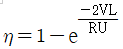
을 이용하여 계산)- 99.5%
- 98.2%
- 96.5%
- 95.0%
(정답률: 알수없음)
46. 먼지의 진비중(S)과 겉보기 비중(SB)이 다음과 같을 때 다음 중 재비산 현상을 유발할 수 있는 가능성이 가장 큰 것은?
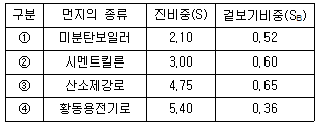
- ①
- ②
- ③
- ④
(정답률: 알수없음)
47. 중유의 성질에 관한 설명으로 가장 거리가 먼 것은?
- 인화점이 낮은 경우에는 역화의 위험성이 있고, 높을 경우(140℃ 이상)에는 착화가 어렵다.
- 점도가 낮은 쪽이 사용상 유리하고, 용적당 발열량도 크고, 유동성이 커 가격도 싼 편이다.
- 인화점은 보통 그 예열온도보다 약 5℃ 이상 높은 것이 좋다.
- 중유 중의 잔류탄소의 함량은 7-16% 정도이다.
(정답률: 알수없음)
48. 염소농도가 200ppm인 배출가스를 처리하여 10mg/Sm3로 배출된다고 할 때, 염소의 제거율(%)은? (단, 온도는 표준상태로 가정)
- 95.7%
- 97.2%
- 98.4%
- 99.6%
(정답률: 알수없음)
49. 입구에서의 유량이 2000m3/h인 함진가스를 원심력집진장치를 이용하여 먼지를 제거하여더니 집진효율이 80% 이었다. 만약, 다른 조건은 일정하고 입구에서의 유량만 2500m3/h로 증가하였다면, 집진효율(%)은 얼마인가?
- 약 64%
- 약 77%
- 약 80%
- 약 82%
(정답률: 알수없음)
50. 탄소, 수소, 산소, 황의 줄양이 각각 86%, 4%, 8%, 2%인 중유의 완전연소에 필요한 이론공기량(Sm3/kg)은?
- 5.5Sm3/kg
- 6.5Sm3/kg
- 7.5Sm3/kg
- 8.5Sm3/kg
(정답률: 알수없음)
51. 반지름 245mm, 유효길이 3.5m인 원통형 bag filter를 사용하여 농도 6g/Sm3,인 배출가스를 22m3/s로 처리하고자 한다. 겉보기 여과속도를 14cm/s로 할 때 bag filter의 필요한 수는?
- 21개
- 30개
- 44개
- 59개
(정답률: 알수없음)
52. 통풍방식 중 압입통풍에 관한 설명으로 틀린 것은?
- 연소용 공기를 예열할 수 있다.
- 송풍기의 고장이 적고 점검 및 보수가 용이하다.
- 흡인통풍식보다 송풍기의 동력소모가 적다.
- 노내압이 부(-)압으로 역화의 우려가 없다.
(정답률: 알수없음)
53. 석회석을 사용하는 배연탈황법의 특성으로 가장 거리가 먼 것은?
- 석회석을 가루로 만들어 연소로에 직접 주입하는 방법으로 초기 투자비가 적다.
- 아주 짧은 시간에 아황산가스와 반응해야 하므로, 흡수효율은 낮으며, 연소로 내에서 Scale을 생성한다.
- 이 반응은 pH의 영향을 많이 받으므로 흡수액의 pH는 9로 지정하고, SO3의 산화는 pH 10 이상에서 진행된다.
- 소규모 보일러나 노후된 보일러에 추가로 설치할 때 사용된다.
(정답률: 알수없음)
54. 다음 각 유해물질의 발생 특성에 관한 설명으로 가장 거리가 먼 것은?
- 황산화물(SOx): 자연적인 발생원은 해면 및 육지로부터의 H2S의 발생, 바다 소금물에 의한 SO4 2-의 방출 등이다.
- 질소산화물(NOx): 저온연소시에는 N2 + O2 → 2NO, 고온에서는 2NO + O2 → 2NO2로 된다.
- 불화수소(HF): 알루미늄 제조공정에서 Na3AlF6, AlF3가 약 1000℃에서 HF를 발생시킨다.
- 염소(Cl2) 및 염화수소(HCl): 염화에틸렌 제조용의 염소 급속 냉각시설, 활성탄 제조용의 반응로 등에서 많이 발생한다.
(정답률: 알수없음)
55. 원심력집진장치에서 선회기류의 흐트러짐을 방지하고 집진된 먼지의 재비산 방지를 위한 운전방법에 해당하는 것은?
- 블로우다운(Blow down)
- 펄스젯트(Pulse jet)
- 기계적진동(Mechanical shaking)
- 공기역류(Reverse air)
(정답률: 알수없음)
56. 다음 촉매산화법에 의한 SO2 제거시 ( )안의 촉매제로 가장 적합한 것은?
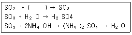
- MnO2
- CaO
- NH3
- V2O5
(정답률: 알수없음)
57. 송풍관(duct)에서 흄(fume) 및 매우 가벼운 건조 먼지(예: 나무 등의 미세한 먼지와 산화아연, 산화알루미늄 등의 흄)의 반응속도로 가장 적합한 것은?
- 2m/s
- 10m/s
- 25m/s
- 50m/s
(정답률: 알수없음)
58. 입자의 비표면적(단위 체적당 표면적)에 관한 설명 중 옳은 것은?
- 입자의 입경이 작아질수록 비표면적은 커진다.
- 입자의 비표면적이 작으면 원심력집진장치의 경우 입자가 장치의 벽면에 부착하여 장치벽면을 폐색시킨다.
- 입자의 비표면적이 작으면 전기집진장치에서는 주로 먼지가 집진극에 퇴적되어 역전리 현상이 초래된다.
- 입자의 비표면적이 커지면 응집성과 흡착력이 작아진다.
(정답률: 알수없음)
59. 다음 연료 중 황(S)성분의 함량 순서로 가장 적합한 것은?
- 중유 ＞ 경유 ＞ 등유 ＞ 휘발유 ＞ LPG
- 중유 ＞ 등유 ＞ 경유 ＞ 휘발유 ＞ LPG
- 중유 ＞ 석탄 ＞ 등유 ＞ 경유 ＞ 휘발유
- 석탄 ＞ 중유 ＞ 등유 ＞ 경유 ＞ 휘발유
(정답률: 알수없음)
60. 다음 송풍기로 가장 적합한 것은?
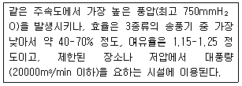
- 다익송풍기
- 터보송풍기
- 평판송풍기
- 레디얼송풍기
(정답률: 알수없음)
4과목: 대기환경 관계 법규
61. 대기환경보전법상 황사대책위원회의 위원 구성 기준으로 옳은 것은?
- 위원장 1명을 포함한 10명 이내의 위원
- 위원장 1명을 포함한 15명 이내의 위원
- 위원장 1명을 포함한 20명 이내의 위원
- 위원장 1명을 포함한 25명 이내의 위원
(정답률: 알수없음)
62. 대기환경보전법규상 대기환경규제지역의 지정대상지역에 관한 기준이다. ( )안에 알맞은 것은?
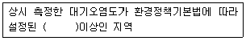
- 환경기준치
- 환경기준의 90퍼센트
- 환경기준의 80퍼센트
- 환경기준의 70퍼센트
(정답률: 알수없음)
63. 악취방지법규상 지정악취물질인 메틸아이소뷰티르케톤의 악취배출허용기준은? (단, 단위는 ppm이며, 공업지역)
- 35이하
- 30이하
- 4이하
- 3이하
(정답률: 알수없음)
64. 대기환경보전법규상 기후ㆍ생태계 변화유발물질에 관한 설명이다. ( )안에 알맞은 것은?
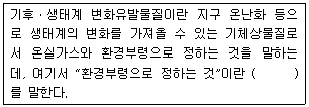
- 육불화황
- 과불화탄소
- 염화불화탄소
- 수소불화탄소
(정답률: 알수없음)
65. 대기환경보전법규상 2008년 12월 31일까지 적용되는 휘발유를 사용하는 자동차연료 제조기준으로 틀린 것은?
- 납함량은 0.013g/L 이하이다.
- 황함량은 50ppm 이하이다.
- 90% 유출온도는 185℃ 이하이다.
- 인함량은 0.0013g/L 이하이다.
(정답률: 알수없음)
66. 대기환경보전법규상 배출가스 전문정비업자가 고의 또는 중대한 과실로 정비 업무를 부실하게 한 경우의 1차( ① ), 2차( ② ), 3차( ③ ) 행정처분기준으로 옳은 것은?
- ① 업무정지1개월, ② 업무정지3개월, ③ 업무정지6개월
- ① 업무정지1개월, ② 경고, ③ 지정취소
- ① 경고, ② 경고, ③ 지정취소
- ① 경고, ② 업무정지1개월, ③ 업무정지3개월
(정답률: 알수없음)
67. 대기환경보전법령상 대기오염 경보 단계별 조치사항과 거리가 먼것은?
- 주의보 발령: 주민의 실외 활동 제한 요청
- 경보 발령: 사업장의 연료사용량 감축 권고
- 중대경보 발령: 자동차의 통행 금지
- 중대경보 발령: 사업장의 조업시간 단축 명령
(정답률: 알수없음)
68. 대기환경보전법령상 배출가스가 제작차배출허용기준에 맞게 유지될 수 있다는 인증을 받지 아니한 자동차 제작자에게 그 매출액에 따른 과징금 부과기준을 나타낸 것이다. ( )안에 알맞은 것은?
- 3/100
- 5/100
- 10/100
- 15/100
(정답률: 알수없음)
69. 악취방지법규상 다음 지정악취물질의 배출허용기준으로 틀린 것은?
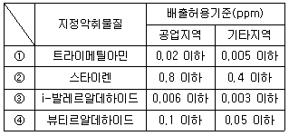
- ①
- ②
- ③
- ④
(정답률: 알수없음)
70. 악취방지법규상 2006년 1월 1일부터 적용되고 있는 악취배출시설의 규모기준에 해당하지 않는 것은?
- 시간당 10톤 이상의 아스팔트제품을 제조 또는 재생하는 시설
- 도축시설이나 고기가공ㆍ저장처리 시설의 면적이 200m2 이상인 시설
- 폐수발생량 5톤/일 이상의 동ㆍ식물성 유지 제조시설
- 용적 합계 2m3 이상의 세모ㆍ부잠 공정을 포함하는 제사 및 방적시설
(정답률: 알수없음)
71. 환경정책기본법령상 아황산가스(SO2)의 대기환경기준치 및 측정방법 기준으로 옳은 것은? ( 단, ① 1시간 평균치, ② 측정방법)
- ① 0.10ppm 이하, ② 화학발광법
- ① 0.15ppm 이하, ② 화학발광법
- ① 0.10ppm 이하, ② 자외선형광법
- ① 0.15ppm 이하, ② 자외선형광법
(정답률: 알수없음)
72. 대기환경보전법상 200만원 이하의 과태료 부과기준에 해당하는 것은?
- 운행차배출허용기준을 위반하여 운행한 자동차 소유자
- 규정에 의한 배출시설 변경신고를 하지 아니한 자
- 대기오염경보 발령지역의 사업장 조업 단축명령을 정당한 사유없이 위반한 자
- 환경부령으로 정하는 측정기기 운영ㆍ관리기준을 지키지 아니한 측정기기 부착사업자
(정답률: 알수없음)
73. 대기환경보전법규상 배출시설을 설치ㆍ운영하는 사업자에 대하여 조업정지를 명하여야 하는 경우로서 그 조업정지가 주민의 생활 등, 그밖에 공익에 현저한 지장을 줄 우려가 있다고 인정되는 경우 조업정지처분에 갈음하여 과징금을 부과할 수 있다. 이 때 과징금의 부가기준에 적용되지 않는 것은?
- 조업정지일수
- 오염물질 부과금액
- 1일당 부과금액
- 사업장 규모별 부과계수
(정답률: 알수없음)
74. 대기환경보전법규상 확인검사대행자에 대한 1차 행정처분기준이 등록취소가 아닌 것은?
- 거짓이나 그 밖의 부정한 방법으로 등록을 한 경우
- 다른 사람에게 등록증을 대여한 경우
- 등록된 범위 외에 검사대행업무를 한 경우
- 1년에 2회 이상 업무정지처분을 받은 경우
(정답률: 알수없음)
75. 다중이용시설 등의 실내공기질 관리법규상 실내공기질 유지기준으로 옳은 것은? (단, “지하역사”, HCHO)
- 100㎍/m3 이하
- 120㎍/m3 이하
- 100mg/m3 이하
- 120mg/m3 이하
(정답률: 알수없음)
76. 대기환경보전법규상 2개월마다 1회 이하 측정하여야 할 시설 중 특정유해물질이 포함된 대기오염물질을 배출하는 경우의 자가측정횟수 기준으로 옳은 것은? (단, 배출허용기준이 적용되는 대기오염물질에 한하며, 비산먼지는 제외한다.)
- 시설의 규모에 관계없이 주 1회 이상 측정하여야 한다.
- 시설의 규모에 관계없이 월 1회 이상 측정하여야 한다.
- 시설의 규모에 관계없이 월 2회 이상 측정하여야 한다.
- 시설의 규모에 따라 주 1회 또는 월 1회 이상 측정하여야 한다.
(정답률: 알수없음)
77. 대기환경보전법규상 자동차연료형 첨가제의 종류에 해당하지 않는 것은?
- 다목적첨가제
- 옥탄가향상제
- 탄화수소향상제
- 유동성향상제
(정답률: 알수없음)
78. 대기환경보전법상 관계 공무원의 오염물질 채취를 위한 출입ㆍ검사를 거부, 방해 또는 기피한 자에 대한 벌칙기준은?
- 300만원 이하의 벌금
- 200만원 이하의 벌금
- 200만원 이하의 과태료
- 50만원 이하의 과태료
(정답률: 알수없음)
79. 대기환경보전법상 대기오염 배출시설 및 방지시설의 운영과 관련한 금지행위가 아닌 것은? (단, 예외사항 제외)
- 배출시설로부터 나오는 오염물질의 공동처리를 위한 공동방지시설을 설치하는 행위
- 오염도를 낮추기 위하여 배출시설에서 나오는 오염물질에 공기를 섞어 배출하는 행위
- 방지시설을 거치지 아니하고 오염물질을 배출할 수 있는 공기조절장치를 설치하는 행위
- 배출시설을 가동할 때에 방지시설을 가동하지 아니하는 행위
(정답률: 알수없음)
80. 대기환경보전법령상 선박의 디젤기관에서 배출되는 대기오염물질 중 대통령령으로 정하는 대기오염물질에 해당하는 것은?
- 황산화물
- 질소산화물
- 염화수소
- 일산화탄소
(정답률: 알수없음)